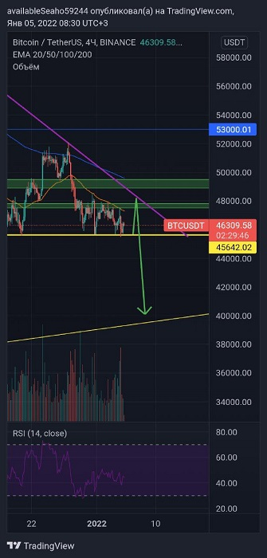
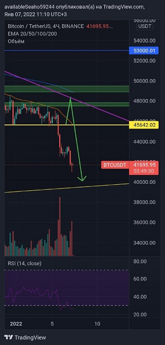

Тех анализ -
Технический анализ — это инструмент оценки ситуации на финансовом рынке для принятия торговых решений, основанный на выявлении закономерностей движения цен. Проще говоря, это когда трейдеры, аналитики пытаются определить, купить или продать актив, наблюдая только за движением цен, мы имеем дело с техническим анализом.
Например:
🖐Всем привет, по Биткоину ожидаю дамп в район 42000-40000 тыс.$ и возможный сквиз район 38000тыс.$ с этих значений буду брать лонги〽️
И как мы видим по скриншоту ниже, по моему тех анализу курс Btc пошёл вниз:)
По графику я увидел как цена билась об нижний уровень уже не первый раз и не второй, максимумы понижались а минимумы были на одном уровне.
Из этого я сделал вывод что, вероятность пойти ниже очень высока!